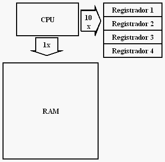
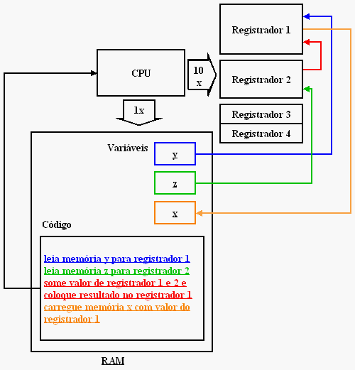
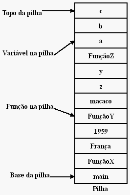

# Básico do básico: assembly
Caloni, 2009-01-26 <computer> [up] [copy]É lógico que não poderia faltar no cinto de utilidades de todo bom programador C conhecimentos **básicos** da linguagem assembly, sua mãe espiritual. São tantos conceitos em comum que, uma vez aprendido seu funcionamento, fica difícil não pensar no código-assembly gerado pelo compilador C. E é nesse ponto que as coisas começam a ficar mais claras.
Antes de tudo, é importantíssimo lembrar que o foco aqui é apenas a arquitetura **8086**, um dos marcos na invenção de computadores de massa, mas que existem trocentros outros modelos de processadores e computadores funcionando mundo afora. Não deixe sua mente fechar para os outros tipos de modelos.
A CPU trabalha em conjunto com a memória RAM. Só que o acesso à essa memória, apesar de rápida, não é comparável à velocidade em que as coisas ocorrem dentro da própria CPU. Esse é apenas um dos motivos para a existência de um conjunto bem menor de memória que vive nas entranhas do processador, bem ao lado dele. São os chamados **registradores**.
Os registradores são memória do tipo ultra-rápida que funciona **no mesmo ritmo do processador**. A maioria das instruções executadas pela CPU faz referência a pelo menos um registrador. E por um motivo muito simples: é o modelo de entrada-e-saída funcionando!
No modelo de entrada-e-saída, ultrassimplificado por mim nesse artigo, o processador executa microinstruções muito básicas, que juntas fazem alguma coisa de útil, por exemplo, somar dois números:
x = y + z;
A operação acima é realizada através de microinstruções bem sucintas:
1. Leia memória y para registrador 1
2. Leia memória z para registrador 2
3. Some valor de registrador 1 e 2 e coloque resultado no registrador 1
4. Carregue memória x com valor do registrador 1
É lógico que o sistema não se baseia apenas em movimentações simples de memória. Existem algumas abstrações que estão incrustadas no funcionamento da arquitetura. Uma das mais importantes é o conceito de **pilha**, vital tanto em arquitetura, quanto assembly, quanto linguagem C e muitas outras linguagens, também.
Pilha é uma forma de armazenar memória em blocos empilhados um-a-um. Esses blocos são empilhados na ordem a, b, c e desempilhados na ordem c, b, a. Ou seja, quem foi empilhado por último será o primeiro a ser desempilhado. A analogia com uma pilha de pratos é óbvia e simples de imaginar.

Para isso funcionar em termos de memória computacional, o programa reserva um espaço de memória com começo e fim que irá guardar os blocos empilhados. Além de ter começo e fim é necessário ter um marcador de onde estamos para empilhar o próximo item ou desempilhar o último.
Se você pensou rápido, a resposta é sim, existem registradores para guardar a posição na pilha em que estamos. Aliás, quando mudamos de função, o valor desses registradores é salvo na própria pilha, já que voltaremos à mesma posição após a chamada.
Um passado distante. Antigamente eram muito usados os chamados registradores de segmento. Eles representavam o endereçamento da arquitetura de 16 bits do 8086. Cada endereço de memória estava localizado em um segmento, que era uma abstração para multiplicar a memória e assim alcançar a quantidade de RAM que estava disponível no sistema. Com a chegada do 32 bits, isso não é mais usado diretamente pelos programadores, que não têm que se preocupar mais tanto com esses detalhes internos da memória.
Resumidamente, temos no PC os seguintes tipos de registradores e seu uso geral na programação C:
Registradores de uso geral. **EAX, EBX, ECX, EDX**.
Registradores de código e dados. **ESP, EBP, EIP**.
Você os verá em 90% das ocasiões em que desassemblar seu código C, pois a rotina do código não muda muito: soma, divide, multiplica, muda endereço do código (saltos), compara valores (flags).
Flags?
Ah, sim, as flags! Elas são importantíssimas para o funcionamento sadio de nossos programas. Sem as flags, não teríamos coisas maravilhosas e fundamentais na programação moderna, tais como o salto condicional.
As flags são bits que **mudam de acordo com algumas instruções**, principalmente as de **comparação** (vide cmp). Após a execução de comparação, o estado de determinadas flags junto da próxima instrução (que deverá ser um salto condicional) irá dizer para onde o programa irá pular sua execução. É assim que temos o if:
if( x == 10 )XEhIgualA10();elseXEhDiferenteDe10();
O código acima seria representado em assembly mais ou menos como abaixo:
1. carrega valor de x no registrador 1 2. compara registrador 1 com 10 3. pula para 6 se for diferente 4. chama XEhIgualA105. pula para 76. chama XEhDiferenteDe107. próxima instrução
Uma curiosidade interessante é a flag de comparação. Se o resultado da comparação disser que os dois elementos são iguais, a flag fica igual a zero, o que significa que os comparandos são idênticos. Se você reparar, a mesma semântica é utilizada na conhecida função strcmp, que retorna zero caso duas strings sejam idênticas. Isso faz sentido em ambos os lados, já que o resultado computacional geralmente deixa um rastro de diferença que é usado como retorno. Se esse rastro não existir, quer dizer que o que foi comparado é idêntico.
Opcodes para aprender:
* mov
* cmp
* jmp
* jne, jle, jnz, etc
* push e pop
* call e ret
Pedaços de código que vale a pena estudar:
push ebp mov epb, esp push eax mov ecx, dword ptr[variavel] push 10 call funcao cmp something jne | jne | jae | ...
O que é legal de fazer para treinar assembly
Desmonte programas, chamadas API. Veja que funções internas elas chamam para realizar determinada tarefa. Tente mudar o comportamento do programa para provar que suas observações sobre o funcionamento estavam corretas.
PS.: Ia me esquecendo. Enquanto estava escrevendo este artigo, um conjunto bem mais detalhado de artigos estava sendo publicado pelo DQ. Recomendo veementemente sua leitura.
# As funções-polegar
Caloni, 2009-01-30 <computer> [up] [copy]Como já havia dito, não há nada mais prazeroso do que ensinar a alguém os velhos truques da profissão e relembrar o porquê de tantas coisas que guardamos na cabeça sobre programação. Hoje tive a oportunidade de explicar como funcionam as funções-polegar.
A função-polegar, uma categoria de função muito peculiar em várias APIs, possui um comportamento padrão de retorno de erros. Entre as diversas funções-polegar que conheço e uso, eis algumas que lembro de cor:
* read, write (C)
* connect.aspx), send.aspx) (Sockets)
* ReadFile.aspx), WriteFile.aspx), CreateProcess (Win32)
O que todas essas funções têm em comum? Bom, ignorando seu funcionamento interno ou seu objetivo, todas elas possuem um valor de retorno no estilo sim ou não, ou seja, deu certo ou não deu. Nessas funções o código de erro, o motivo da função não ter dado certo, não é retornado diretamente. É o que chamo de esquema do polegar pra cima ou polegar pra baixo. O retorno da função especifica o ângulo giratório do dedão:
* ssize_t pread, ssize_t write. Retorno de -1 significa que deu algo errado.
* int connect, int send. Se retornar SOCKET_ERROR
* BOOL ReadFile, BOOL WriteFile, BOOL CreateProcess. TRUE sucesso, FALSE erro.
Por exemplo, chamamos a função ReadFile para ler um arquivo. Ela retorna FALSE. Isso significa que não deu certo nossa leitura. Por quê? Ora, não sabemos ainda. Apenas sabemos que o polegar está virado para baixo!
Em funções nessas condições, geralmente existe uma segunda função (ou variável) que retorna o último erro que ocorreu na API, ou seja, o erro que fez com que última função chamada retornasse que algo não deu certo. Nas funções de exemplo, são usados três métodos distintos, pois estamos falando de três APIs distintas:
* Variável errno
* Função WSAGetLastError.aspx)
* Função GetLastError.aspx)
São esses métodos que realmente retornam o porquê da função ter dado errado. E é elas que devemos chamar, eu disse devemos chamar, sempre que a função der errado. Até porque, já que o polegar está virado para baixo, temos que fazer alguma coisa para que nosso programa não morra.
Como bem observado pelo Fernando no comentário abaixo, nem todas as funções-polegar possuem uma função para obter a causa do erro. Vide SysAllocString, ou mesmo malloc. Nesse caso, não há muito o que determinar a não ser que não foi possível alocar o recurso pedido pelo sistema. Paciência.
[2008-12] [2009-02]